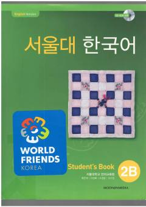

SNKoreys tilini o'rganuvchilar uchun mo'ljallangan 2B darasidagi o'quv qo'llanma.
Bu darslik kattalar uchun koreys tilini o'rganishga mo'ljallangan bo'lib, muloqot ko'nikmalarini bosqichma-bosqich rivojlantirishga yordam beradi. Kitob tinglash, gapirish, o'qish va yozish ko'nikmalarini madaniy kontekst bilan birgalikda o'z ichiga oladi. Shuningdek, dars jarayonini yanada samarali qilish uchun CD-ROM ilova qilingan.